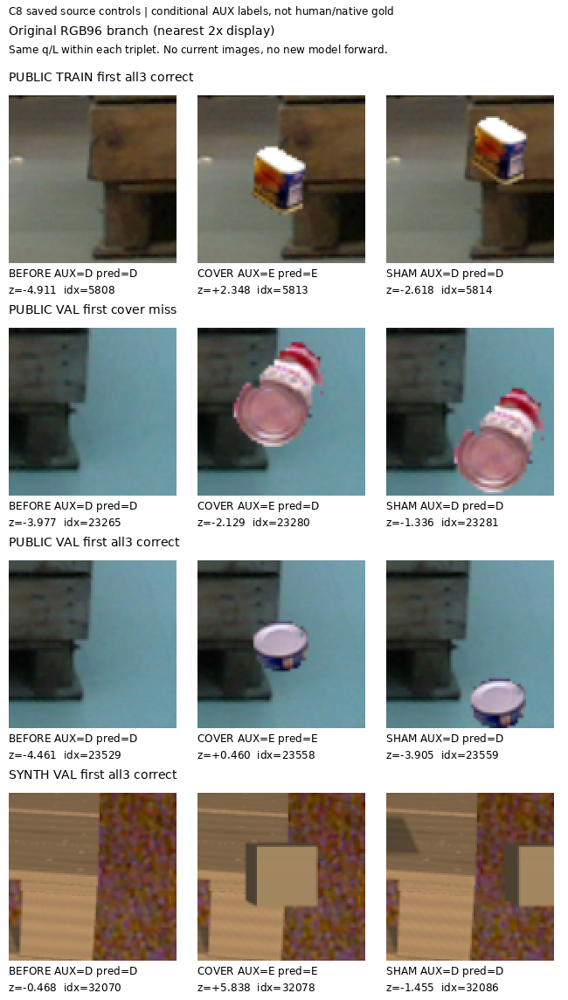
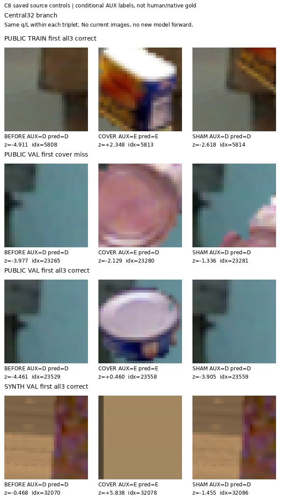

9/12 gate 통과 → 불채택. 합성 VAL은 D205/209·E34/34, matched triple30/32였다. 공개 RGB 기반 controlled cover는56/119, triple46/119에 그쳐 새 current223 추론은 하지 않았다.
ResNet18의 고정 ImageNet 특징으로 RGB96 전체와 중앙32를 읽고 작은 binary head만 학습했다. P3나 C1 logit은 입력하지 않았다. 결과는 조건부 물리 cue AUX이며 human/native8 gold나 current 성능이 아니다.
| 대상 | D 재현율 | E 재현율 | D 정밀도 | E 정밀도 | known U |
|---|---|---|---|---|---|
| 공개 RGB 기반 AUX VAL | 141/152 (92.8%) | 57/121 (47.1%) | 68.8% | 83.8% | 0.0% |
| 합성 expected-cue AUX VAL | 205/209 (98.1%) | 34/34 (100.0%) | 100.0% | 89.5% | 0.0% |
공개 E57/121은 자연 BEFORE1/2와 controlled COVER56/119의 합이다. Sham D는108/119였다. 공개 triple은 TRAIN67/75(89.3%) → VAL46/119(38.7%)로 벌어졌다. 합성 triple은30/32(93.8%)였다.
| 실패한 사전 gate | 실제 | 기준 |
|---|---|---|
| 공개 자연 BEFORE E | 50.0% | ≥ 75.0% |
| 공개 controlled COVER E | 47.1% | ≥ 75.0% |
| 공개 BEFORE/COVER/SHAM 모두 정답 | 38.7% | ≥ 75.0% |
각 arm의 이미 동결된 저장 결과를 같은 행에서 비교했다. 아래 표로 checkpoint를 다시 고르지 않았다. Triple은 동일 BEFORE·COVER·SHAM 세 응답이 모두 맞은 수다.
| 고정 모델 | 공개 cover E | 공개 sham D | 공개 triple | 합성 D | 합성 E | 합성 triple |
|---|---|---|---|---|---|---|
| v61 | 108/119 | 18/119 | 8/119 | 37/209 | 29/34 | 7/32 |
| C1 저장 기준 | 2/119 | 115/119 | 2/119 | 189/209 | 2/34 | 2/32 |
| C6 raw 잔차 | 8/119 | 115/119 | 7/119 | 171/209 | 33/34 | 26/32 |
| C7 clip2 잔차 | 64/119 | 115/119 | 63/119 | 133/209 | 34/34 | 19/32 |
| C8 frozen RGB | 56/119 | 108/119 | 46/119 | 205/209 | 34/34 | 30/32 |
C1은 이미 저장된 frozen reference component이며 새 C1 추론이 아니다. v61은 원 presence≥0을D로, 나머지는 external logit≥0을E로 읽는 기존 tie 규칙을 유지했다. C8은 합성 성능을 개선했지만 공개 triple은 C7보다 낮아 전체 우월을 주장할 수 없다.
동결된 C8 출력에서 진단 조건에 맞는 첫 canonical 사례를 표시했다. 같은 쌍의 q/L은 동일하고, 이 사후 그림은 학습 행·threshold·checkpoint를 바꾸지 않는다. 공개 VAL 첫 실패는 중앙에 donor가 크게 들어와도 D를 유지한다. 그림만으로 실패 원인을 확정하지 않는다.


전체33,984행을 유지했다. D1,215·E303만 binary 학습 대상이고, geometric S396은 이 과제 밖으로 분리했다. teacher U32,070과 factual input U4,686은 별개다. 공개119개 VAL 제어쌍은18개 base query·9개 이미지에 모여 있으며 자연 E VAL은2개뿐이다. 반복 사용한 source VAL은 blind test가 아니다.
현재의 초기 q가 올바른 물리 cue에 대응하는지는 별도 문제다. V104 실제32 query 검토에서는 여러 pallet을 감싼 box와 floor·사람·트럭 위 q가 관찰됐다. 다른 물체가 보인다는 사실만으로 E나 위치 오답 gold를 만들지 않았다. V104 새 표본은 C8 학습에 쓰지 않았다.
다음은 더 넓은 자연 실제 RGB에서 target↔물리 cue·불확실성·외부 blocker 근거를 독립적으로 연결하는 일이다. 고정 q/L을 유지하며 target-context 표현을 검토한다. 임의 threshold/LR 재추첨으로 현재 실패를 덮지 않는다.